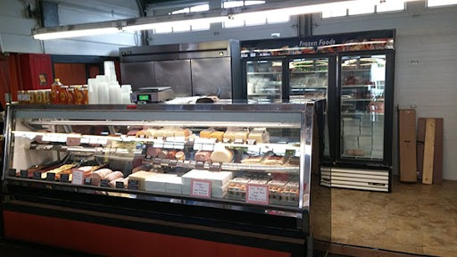

960 Spruce St
Trenton, NJ 08648
609-396-3966
Hours:Thursday-Saturday, 9.00AM-6.00AM
CARTILDGE QUALITY MEAT
609-396-3966
About Us
We are a retail butcher shop specializing in high quality fresh meat products.
We source all products from local processors in NJ, PA, and MD, using our connections from years of experience in bringing you the finest fresh meats.
Cartlidge's Quality Meats first started in The Trenton Farmers Market in the 1940's, after moving from horse-drawn carriage on the Rt 1 circle.
After 3 generations in the Cartlidge family, in 2008, the Stoltzfus family from Lancaster, PA, purchased the business from Jim Cartlidge.
Our goal remains the same as it has for years; bringing you fresh quality beef, pork, chicken, and more, with old fashioned quality and service.
We are happy to announce that we have expanded our area inside The Trenton Farmers Market!
